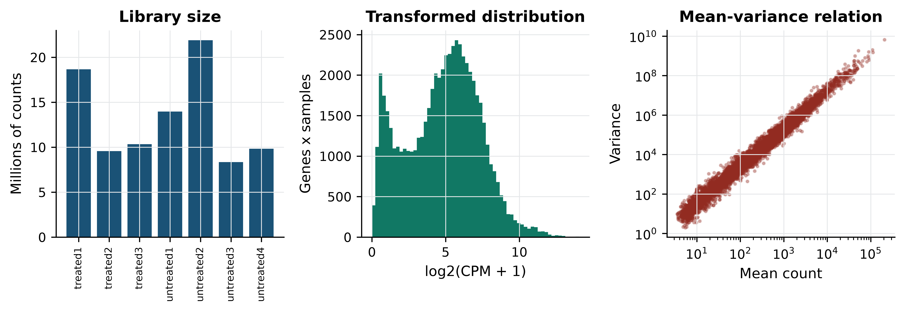
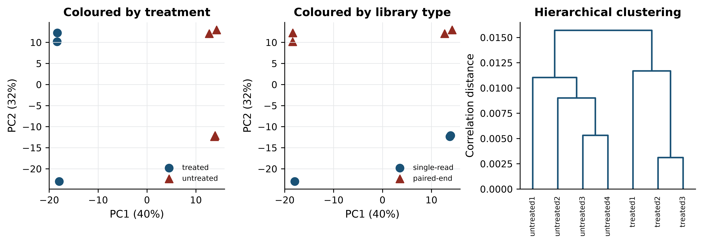
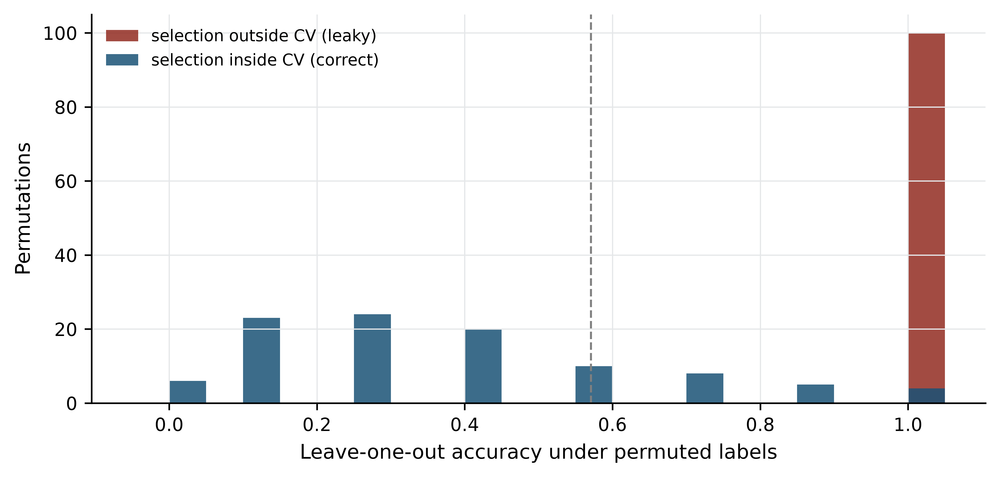
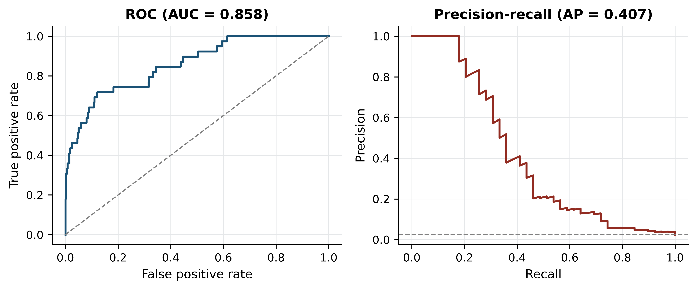

import sys; sys.path.insert(0, "..")
from pybfx import book_data, style, PALETTE
style()
import numpy as np
import pandas as pd
import matplotlib.pyplot as plt
from scipy import stats12 Statistics and machine learning on omics data
After working through this chapter you will be able to
- distinguish technical from biological replication and say which one licences a claim about a population
- normalise a count matrix and demonstrate why raw counts cannot be compared across libraries
- diagnose a batch effect, and quantify how much of a confounded comparison it explains
- interpret a principal component analysis, including variance explained and loadings
- choose and defend a number of clusters, and test whether a partition is stable
- build a cross-validated classifier in scikit-learn without leaking information between folds
- evaluate a model with precision, recall and the curves that remain informative under class imbalance
A count matrix is not a result. Between the matrix and a defensible statement about biology sit a dozen decisions — which genes to keep, how to make libraries comparable, what to do about the fact that samples were prepared in two different ways, how to correct thousands of simultaneous tests, whether an apparent cluster is real, and whether a classifier that reports 100% accuracy has learned anything at all. Each decision can turn a real effect into a null result or, more often, turn noise into a publishable figure.
This chapter works through those decisions on the bundled Drosophila RNA-seq dataset in data/expression/pasilla_gene_counts.tsv: 14,599 genes measured in seven samples, three in which the gene pasilla was knocked down by RNA interference and four untreated controls, with the sample metadata in data/expression/pasilla_sample_annotation.csv, from the study that first reported it (Brooks et al. 2010). The dataset is small enough to hold in your head and real enough to misbehave. In particular, its libraries were built two different ways — three single-read, four paired-end — and that difference is almost as large a source of variation as the treatment itself, which makes it an unusually honest teaching set.
The single most valuable result in this chapter is in the section on supervised learning. Selecting informative genes before cross-validation rather than inside it produces a classifier that reports perfect accuracy on data whose labels have been randomly shuffled. You will run that demonstration and see the number.
12.1 Setting up
12.2 Designing an experiment that can answer the question
No amount of analysis repairs a design that cannot answer the question, and the most common failure is not a shortage of data but the wrong kind of replication.
A technical replicate repeats the measurement on the same biological material: the same RNA extract sequenced twice, the same library loaded on two lanes. It estimates the variability of the measurement process. A biological replicate repeats the whole experiment on independent material: a different fly culture, a different patient, a different mouse. It estimates the variability of the biological population, which is what almost every scientific claim is about.
Technical replicates cannot substitute for biological ones. Sequencing one RNA sample across twenty lanes gives twenty highly concordant measurements of that one sample, a reassuringly small standard error, and no information whatsoever about whether another fly would have behaved the same way. The resulting p-value answers a question nobody asked. The bundled metadata records that some samples were run across five or six lanes; those lanes were summed into one count column, which is the correct treatment, because they were never independent observations of biology.
sample_info = pd.read_csv(book_data("expression", "pasilla_sample_annotation.csv"))
sample_info["sample"] = sample_info["file"].str.replace("fb", "", regex=False)
sample_info = sample_info.set_index("sample")
print(sample_info[["condition", "type", "number of lanes"]])
#> condition type number of lanes
#> sample
#> treated1 treated single-read 5
#> treated2 treated paired-end 2
#> treated3 treated paired-end 2
#> untreated1 untreated single-read 2
#> untreated2 untreated single-read 6
#> untreated3 untreated paired-end 2
#> untreated4 untreated paired-end 2Three further design points decide whether the analysis below is worth running.
Replicate number. Three per group is the practical floor for RNA-seq and detects only large effects; the pasilla design has three treated and four untreated. With fewer than three, variance cannot be estimated per gene at all, which is why methods such as DESeq2 (Love, Huber, and Anders 2014) and edgeR (Robinson, McCarthy, and Smyth 2009) share information across genes to stabilise the estimate.
Randomisation. Assign samples to processing batches, lanes and extraction days at random. Processing all controls on Monday and all treated samples on Tuesday guarantees that a day effect is indistinguishable from a treatment effect.
Blocking. When a nuisance factor cannot be avoided — two sequencing runs, two operators — ensure every level of the factor contains both conditions, and record it. A recorded nuisance factor can be modelled; an unrecorded one cannot.
How many replicates are enough is a question of effect size, variability and the smallest difference worth detecting, and it has no universal answer. The useful discipline is to decide, before the experiment, what difference would change what you do next — a twofold change in a handful of genes, or a subtle shift across a pathway — and to ask whether the planned design could detect it. For RNA-seq the rough guidance from published power studies is that three replicates per group detect twofold changes in well-expressed genes, six begin to reach 1.5-fold, and detecting small coordinated shifts needs tens. A study powered for the wrong effect size produces a null result that cannot be distinguished from an absent effect, which is the most expensive outcome in the catalogue.
Confounding is a property of the design, not the data
If every treated sample was prepared with one protocol and every control with another, no statistical method can separate protocol from treatment. Batch correction, covariate adjustment and sophisticated models all fail identically, because the information is absent. The only fix is a different experiment.
12.3 The shape of an omics matrix
Tidy data has one row per observation and one column per variable (Wickham et al. 2019). An omics count matrix deliberately breaks that rule: it is stored with one row per gene and one column per sample, because the matrix form is what linear algebra and most statistical software expect. The tidy form is useful for plotting and joining, the matrix form for computation, and a working analysis moves between them; pandas supplies both representations and the operations that convert one into the other (McKinney 2010).
counts = pd.read_csv(book_data("expression", "pasilla_gene_counts.tsv"),
sep="\t", index_col=0)
counts = counts[sample_info.index] # fix column order to match metadata
print(f"{counts.shape[0]:,} genes x {counts.shape[1]} samples")
#> 14,599 genes x 7 samples
print(counts.iloc[:3, :4])
#> treated1 treated2 treated3 untreated1
#> gene_id
#> FBgn0000003 0 0 1 0
#> FBgn0000008 140 88 70 92
#> FBgn0000014 4 0 0 5The shape is the problem. There are 14,599 features and seven samples, so p ≫ n: vastly more variables than observations. Three consequences follow, and every statistical trap later in the chapter is one of them in disguise.
First, any two groups of samples can be separated perfectly by some subset of features, even when the labels are random. With 14,599 genes and seven samples there is always a gene that happens to split them. Second, distances become uninformative: in high dimensions the distance from a point to its nearest neighbour approaches the distance to its farthest, so “these samples cluster together” needs evidence beyond a plot. Third, the number of possible models vastly exceeds the data available to choose between them, so model selection needs external validation rather than internal fit.
Low-count genes contribute noise without information, and removing them before anything else reduces the testing burden.
expressed = counts[(counts > 5).sum(axis=1) >= 3]
print(f"genes with no counts at all: {(counts.sum(axis=1) == 0).sum():,}")
#> genes with no counts at all: 2,240
print(f"genes retained (>5 counts in >=3 samples): {expressed.shape[0]:,}")
#> genes retained (>5 counts in >=3 samples): 8,621The filter is a judgement, not a rule. Requiring counts above five in at least three samples — the size of the smallest group — keeps genes that could show a group-specific signal and discards those that cannot. State the rule in your methods, because it changes how many tests you perform and therefore every corrected p-value.
12.4 Exploring and normalising count data
RNA-seq counts are not normally distributed. They are non-negative integers, strongly right-skewed, and their variance grows with their mean — a gene averaging 10,000 reads varies far more in absolute terms than one averaging 10. Figure 12.1 shows both facts alongside the library sizes that make raw counts incomparable.
library_sizes = expressed.sum() / 1e6
cpm = expressed / expressed.sum() * 1e6
log_cpm = np.log2(cpm + 1)
fig, axes = plt.subplots(1, 3, figsize=(9, 3.2))
axes[0].bar(range(len(library_sizes)), library_sizes, color=PALETTE[0])
axes[0].set_xticks(range(len(library_sizes)))
axes[0].set_xticklabels(library_sizes.index, rotation=90, fontsize=7)
axes[0].set_ylabel("Millions of counts")
axes[0].set_title("Library size")
axes[1].hist(log_cpm.values.ravel(), bins=60, color=PALETTE[1])
axes[1].set_xlabel("log2(CPM + 1)")
axes[1].set_ylabel("Genes x samples")
axes[1].set_title("Transformed distribution")
axes[2].scatter(expressed.mean(axis=1), expressed.var(axis=1), s=3,
alpha=0.3, color=PALETTE[3])
axes[2].set_xscale("log"); axes[2].set_yscale("log")
axes[2].set_xlabel("Mean count"); axes[2].set_ylabel("Variance")
axes[2].set_title("Mean-variance relation")
fig.tight_layout()
Three features of the left and centre panels deserve attention before any modelling. Counts span roughly five orders of magnitude within a single sample, so an untransformed matrix is dominated by a few hundred genes; the log transform in the centre panel is what makes the rest visible. Zeros are abundant — 2,240 of the 14,599 genes have no counts in any sample — and a zero is ambiguous, meaning either that a transcript is absent or that sequencing was too shallow to see it, which is why a pseudocount is added before taking logarithms rather than discarding the zeros. And the right-hand panel shows variance rising faster than the mean, the overdispersion that makes the Poisson distribution inadequate and the negative binomial the standard choice for count models.
Library sizes range from 8.4 to 21.9 million counts. A gene with 100 reads in the smallest library is twice as abundant, proportionally, as a gene with 100 reads in the largest. Normalisation removes that difference. The simplest method, counts per million (CPM), divides each count by its library total; it is what the code above computes. The demonstration below shows what it fixes.
pair = ["untreated2", "untreated3"]
gene = "FBgn0000008"
print("raw counts:", counts.loc[gene, pair].tolist(),
"ratio", round(counts.loc[gene, pair[0]] / counts.loc[gene, pair[1]], 2))
#> raw counts: [161, 76] ratio 2.12
print("CPM:", cpm.loc[gene, pair].round(2).tolist(),
"ratio", round(cpm.loc[gene, pair[0]] / cpm.loc[gene, pair[1]], 2))
#> CPM: [7.35, 9.1] ratio 0.81
raw_ratio = np.log2(expressed[pair[0]] + 1) - np.log2(expressed[pair[1]] + 1)
cpm_ratio = log_cpm[pair[0]] - log_cpm[pair[1]]
print(f"median log2 ratio across all genes - raw: {raw_ratio.median():.3f}, "
f"CPM: {cpm_ratio.median():.3f}")
#> median log2 ratio across all genes - raw: 1.443, CPM: 0.056The gene looks 2.12-fold up in untreated2 on raw counts and 0.81-fold — that is, slightly down — after normalisation. The direction of the effect reverses. The summary line explains why: before normalisation the median log ratio across all 8,621 genes is 1.443, almost exactly the log ratio of the two library sizes, because most genes do not change and the apparent shift is entirely a depth artefact. After CPM the median is 0.056, close to the zero that a comparison of two control samples should produce.
CPM is the simplest method, not the best one
CPM assumes total counts are comparable, which fails when a few very highly expressed genes dominate one sample — common in tissue with a dominant transcript. The median-of-ratios method in DESeq2 (Love, Huber, and Anders 2014) and trimmed mean of M-values in edgeR (Robinson, McCarthy, and Smyth 2009) estimate a size factor from the bulk of genes instead, and are the defaults for differential expression. Transcript-length normalisation (TPM, FPKM) additionally divides by gene length, which is necessary when comparing different genes but not when comparing one gene across samples.
12.5 Batch effects and confounding
A batch effect is systematic variation introduced by how samples were processed rather than by what they are: reagent lot, sequencing run, extraction day, library protocol (Leek et al. 2010). Batch effects are not noise. They are reproducible, often large, and they bias in a consistent direction — which is exactly what makes them look like biology.
The pasilla design contains a real one. Four samples were sequenced paired-end and three single-read, and that split cuts across both conditions. Because it cuts across, the effect can be measured directly: compare untreated samples with one library type against untreated samples with the other, where no treatment difference exists by construction.
def two_group_p(group_a, group_b):
"""Per-gene two-sample t-test on log-CPM; returns a Series of p-values."""
stat, p = stats.ttest_ind(log_cpm[group_a], log_cpm[group_b], axis=1)
return pd.Series(p, index=log_cpm.index)
batch_only = two_group_p(["untreated1", "untreated2"], # single-read
["untreated3", "untreated4"]) # paired-end
n_genes = log_cpm.shape[0]
print(f"genes tested: {n_genes:,}; expected at p < 0.05 by chance: {0.05 * n_genes:.0f}")
#> genes tested: 8,621; expected at p < 0.05 by chance: 431
print(f"library-type contrast, untreated only: {(batch_only < 0.05).sum():,} genes at p < 0.05")
#> library-type contrast, untreated only: 676 genes at p < 0.05Within a single biological condition, 676 genes reach p < 0.05 against an expectation of 431. The library protocol changes measured expression for hundreds of genes.
Now construct the failure. Take two paired-end treated samples and two single-read untreated samples. In that four-sample subset, condition and library type are perfectly confounded — exactly the design produced by processing cases and controls separately.
confounded = two_group_p(["treated2", "treated3"], # both paired-end
["untreated1", "untreated2"]) # both single-read
proper = two_group_p(["treated1", "treated2", "treated3"],
["untreated1", "untreated2", "untreated3", "untreated4"])
batch_hits = set(batch_only[batch_only < 0.05].index)
conf_hits = set(confounded[confounded < 0.05].index)
proper_hits = set(proper[proper < 0.05].index)
print(f"confounded contrast: {len(conf_hits):,} genes at p < 0.05")
#> confounded contrast: 1,533 genes at p < 0.05
print(f" of these, also significant in the pure library-type contrast: "
f"{len(conf_hits & batch_hits):,} "
f"({100 * len(conf_hits & batch_hits) / len(conf_hits):.1f}%)")
#> of these, also significant in the pure library-type contrast: 342 (22.3%)
print(f" expected by chance: {100 * len(batch_hits) / n_genes:.1f}%")
#> expected by chance: 7.8%
print(f" also found by the properly balanced contrast: "
f"{100 * len(conf_hits & proper_hits) / len(conf_hits):.1f}%")
#> also found by the properly balanced contrast: 45.5%The confounded comparison returns 1,533 genes. Of those, 22.3% also appear in the pure library-type contrast, against 7.8% expected by chance — a nearly threefold enrichment for genes known to respond to protocol rather than treatment. Fewer than half of the 1,533 are recovered by the balanced comparison using all seven samples. Written up without the metadata, this list would read as a treatment signature; it is in substantial part a protocol signature, and nothing in the numbers themselves distinguishes the two.
The remedies, in order of effectiveness: design the experiment so batch is balanced across conditions; record batch so it can be included as a covariate in the model; or, if neither was done, apply an empirical Bayes correction such as ComBat (Johnson, Li, and Rabinovic 2006) and report it as a limitation. Correction after the fact removes variation that may contain signal, and it can only ever approximate what balanced design gives for free.
12.6 Multiple testing and the false discovery problem
Testing 8,621 genes at a 5% threshold produces about 431 significant results when nothing is happening. The simulation below makes that concrete, then shows what the Benjamini–Hochberg procedure does about it (Benjamini and Hochberg 1995).
rng = np.random.default_rng(20250101)
def benjamini_hochberg(p_values):
"""Benjamini-Hochberg adjusted p-values, written out rather than imported."""
p = np.asarray(p_values)
m = len(p)
order = np.argsort(p)
ranked = p[order] * m / np.arange(1, m + 1)
adjusted = np.minimum.accumulate(ranked[::-1])[::-1]
out = np.empty(m)
out[order] = np.minimum(adjusted, 1)
return out
null_data = rng.normal(size=(10_000, 20)) # no difference between groups
_, p_null = stats.ttest_ind(null_data[:, :10], null_data[:, 10:], axis=1)
print(f"pure noise: {(p_null < 0.05).sum()} of 10,000 'genes' at p < 0.05")
#> pure noise: 501 of 10,000 'genes' at p < 0.05
print(f"pure noise: {(benjamini_hochberg(p_null) < 0.05).sum()} survive BH correction")
#> pure noise: 0 survive BH correction501 false positives before correction, none after. Now add real signal: 200 of the 10,000 genes are given a genuine difference between groups.
mixed = rng.normal(size=(10_000, 20))
mixed[:200, 10:] += 2.0 # the first 200 genes truly differ
_, p_mixed = stats.ttest_ind(mixed[:, :10], mixed[:, 10:], axis=1)
significant = benjamini_hochberg(p_mixed) < 0.05
true_positives = significant[:200].sum()
false_positives = significant[200:].sum()
print(f"raw p < 0.05: {(p_mixed < 0.05).sum()}")
#> raw p < 0.05: 720
print(f"BH significant: {significant.sum()} "
f"(true {true_positives}, false {false_positives})")
#> BH significant: 133 (true 126, false 7)
print(f"observed false discovery proportion: "
f"{false_positives / significant.sum():.3f}")
#> observed false discovery proportion: 0.053
print(f"power to detect the 200 real effects: {true_positives / 200:.2f}")
#> power to detect the 200 real effects: 0.63The procedure delivers what it promises: 133 discoveries of which seven are false, a false discovery proportion of 0.053 against the nominal 0.05. It also shows the cost — only 126 of the 200 real effects are found, because controlling false positives always sacrifices power. The false discovery rate is the expected proportion of false positives among the results you call significant, which is the quantity that matters when the output is a list of candidates for follow-up. The family-wise error rate controlled by Bonferroni is the probability of even one false positive, which is the right target only when a single wrong call invalidates the study. Storey’s q-value refines the FDR estimate by estimating the proportion of true nulls rather than assuming it is one (Storey and Tibshirani 2003).
One legitimate way to recover power is independent filtering: removing tests that have little chance of being significant, using a criterion independent of the test statistic under the null. Mean expression is such a criterion, which is why the low-count filter applied earlier is not merely tidying — it reduces the number of tests, and therefore the correction burden, without biasing the remaining p-values. Filtering on something correlated with the test statistic, such as fold change, does bias them, and is not independent filtering at all.
Correct for every test you performed
The correction must cover all tests actually conducted, including the ones not reported. Running the analysis with three filtering thresholds and reporting the one with most hits is multiple testing with an unrecorded denominator, and no correction applied afterwards can repair it.
12.7 Finding structure without labels
Principal component analysis (PCA) re-expresses samples in new coordinates — principal components — that are uncorrelated linear combinations of the original features, ordered so that the first captures the most variance. It is the first diagnostic to run on any omics matrix, because the leading components usually reveal whichever factor dominates the experiment, and that factor is often not the one you intended to study.
Three choices control what PCA shows. Transform count data first, or the result will be dominated by a handful of highly expressed genes. Centre the features, always. Whether to scale them to unit variance depends: on log-CPM data, scaling gives low-expression noisy genes the same weight as informative ones, so centring without scaling is the usual choice for RNA-seq.
from sklearn.decomposition import PCA
expression_matrix = log_cpm.T.values # samples as rows, genes as columns
centred = expression_matrix - expression_matrix.mean(axis=0)
pca = PCA(n_components=4).fit(centred)
scores = pca.transform(centred)
variance_explained = 100 * pca.explained_variance_ratio_
for i, pct in enumerate(variance_explained, start=1):
print(f"PC{i}: {pct:.1f}% of variance")
#> PC1: 39.7% of variance
#> PC2: 31.8% of variance
#> PC3: 14.3% of variance
#> PC4: 6.2% of variancePC1 accounts for 39.7% of the variance and PC2 for 31.8%. Two components of nearly equal size is a warning in itself: it means two comparably strong factors are at work. Figure 12.2 identifies them.
from scipy.cluster.hierarchy import linkage, dendrogram
from scipy.spatial.distance import pdist
fig, axes = plt.subplots(1, 3, figsize=(9.5, 3.4))
for ax, factor, title in [(axes[0], "condition", "Coloured by treatment"),
(axes[1], "type", "Coloured by library type")]:
for level, colour, marker in zip(sample_info[factor].unique(),
[PALETTE[0], PALETTE[3]], ["o", "^"]):
rows = sample_info[factor] == level
ax.scatter(scores[rows.values, 0], scores[rows.values, 1],
label=level, color=colour, marker=marker, s=55)
ax.set_xlabel(f"PC1 ({variance_explained[0]:.0f}%)")
ax.set_ylabel(f"PC2 ({variance_explained[1]:.0f}%)")
ax.set_title(title); ax.legend(fontsize=7)
#> <matplotlib.collections.PathCollection object at 0x7007290f90>
#> <matplotlib.collections.PathCollection object at 0x700aed41d0>
#> Text(0.5, 0, 'PC1 (40%)')
#> Text(0, 0.5, 'PC2 (32%)')
#> Text(0.5, 1.0, 'Coloured by treatment')
#> <matplotlib.legend.Legend object at 0x7007286890>
#> <matplotlib.collections.PathCollection object at 0x700aedd5d0>
#> <matplotlib.collections.PathCollection object at 0x700aedee90>
#> Text(0.5, 0, 'PC1 (40%)')
#> Text(0, 0.5, 'PC2 (32%)')
#> Text(0.5, 1.0, 'Coloured by library type')
#> <matplotlib.legend.Legend object at 0x700ae792d0>
linkage_matrix = linkage(pdist(expression_matrix, metric="correlation"),
method="average")
dendrogram(linkage_matrix, labels=list(log_cpm.columns), ax=axes[2],
leaf_rotation=90, leaf_font_size=7, color_threshold=0)
#> {'icoord': [[25.0, 25.0, 35.0, 35.0], [15.0, 15.0, 30.0, 30.0], [5.0, 5.0, 22.5, 22.5], [55.0, 55.0, 65.0, 65.0], [45.0, 45.0, 60.0, 60.0], [13.75, 13.75, 52.5, 52.5]], 'dcoord': [[0.0, np.float64(0.005322645578154095), np.float64(0.005322645578154095), 0.0], [0.0, np.float64(0.009014687502200636), np.float64(0.009014687502200636), np.float64(0.005322645578154095)], [0.0, np.float64(0.011036647520912971), np.float64(0.011036647520912971), np.float64(0.009014687502200636)], [0.0, np.float64(0.0031241642381534263), np.float64(0.0031241642381534263), 0.0], [0.0, np.float64(0.011697609592121572), np.float64(0.011697609592121572), np.float64(0.0031241642381534263)], [np.float64(0.011036647520912971), np.float64(0.01571507976369388), np.float64(0.01571507976369388), np.float64(0.011697609592121572)]], 'ivl': ['untreated1', 'untreated2', 'untreated3', 'untreated4', 'treated1', 'treated2', 'treated3'], 'leaves': [3, 4, 5, 6, 0, 1, 2], 'color_list': ['C0', 'C0', 'C0', 'C0', 'C0', 'C0'], 'leaves_color_list': ['C0', 'C0', 'C0', 'C0', 'C0', 'C0', 'C0']}
axes[2].set_ylabel("Correlation distance")
#> Text(0, 0.5, 'Correlation distance')
axes[2].set_title("Hierarchical clustering")
#> Text(0.5, 1.0, 'Hierarchical clustering')
axes[2].grid(False)
fig.tight_layout()
The left panel shows a clean separation of treated from untreated along PC1. The centre panel shows the problem: PC2, carrying almost as much variance, separates single-read from paired-end libraries. Had the design been confounded, these two axes would have collapsed into one and the figure would have looked like an unambiguous treatment effect.
Loadings say which genes drive a component. Each loading is the weight of one gene in the linear combination, and the extreme ones are the genes that define the axis.
pc1_loadings = pd.Series(pca.components_[0], index=log_cpm.index)
print("strongest positive PC1 loadings:")
#> strongest positive PC1 loadings:
print(pc1_loadings.nlargest(3).round(4).to_string())
#> gene_id
#> FBgn0039155 0.1331
#> FBgn0039827 0.1120
#> FBgn0003360 0.0969
print("strongest negative PC1 loadings:")
#> strongest negative PC1 loadings:
print(pc1_loadings.nsmallest(3).round(4).to_string())
#> gene_id
#> FBgn0025111 -0.0911
#> FBgn0035189 -0.0874
#> FBgn0000071 -0.0817Non-linear embeddings
t-distributed stochastic neighbour embedding (t-SNE) (Maaten and Hinton 2008) and uniform manifold approximation and projection (UMAP) (McInnes, John, and James 2018; Becht et al. 2018) place points in two dimensions so that near neighbours in the original space stay near. They are the standard display for single-cell data, where thousands of cells make a PCA scatter plot unreadable, and they genuinely reveal structure that PCA’s linearity hides. They are also systematically misread.
Both methods preserve local neighbourhoods and deliberately discard global geometry. The consequences are specific. The distance between two clusters on a t-SNE plot carries no information — clusters that appear adjacent may be no more similar than clusters at opposite corners. Cluster sizes and densities are artefacts of the algorithm’s normalisation, not measurements of spread. The embedding depends strongly on the perplexity or neighbour-count parameter, and running the same data at two settings produces two different pictures, both correct in their own terms. Finally, t-SNE and UMAP will produce apparently clean groups from pure noise if the parameters invite it.
The defensible use is as a display of a clustering computed elsewhere: cluster in the PCA space, then colour the embedding by cluster label. Treating the embedding itself as the analysis is where the trouble starts. A seven-sample dataset like this one is far too small for either method, which is why neither is run here.
Clustering, and choosing k
Hierarchical clustering builds a tree by repeatedly joining the closest pair, and requires two choices: a distance (correlation distance is usual for expression profiles, because it ignores overall magnitude) and a linkage rule (average or Ward are the safe defaults). Cutting the tree at a height gives a partition. k-means instead places k centroids and iterates, and requires k in advance.
from scipy.cluster.hierarchy import fcluster
from sklearn.cluster import KMeans
from sklearn.metrics import silhouette_score
for k in (2, 3, 4):
hierarchical = fcluster(linkage_matrix, k, criterion="maxclust")
kmeans = KMeans(n_clusters=k, n_init=20, random_state=0).fit_predict(expression_matrix)
print(f"k={k} silhouette={silhouette_score(expression_matrix, kmeans):.3f} "
f"hierarchical={hierarchical} k-means={kmeans}")
#> k=2 silhouette=0.241 hierarchical=[2 2 2 1 1 1 1] k-means=[1 1 1 0 0 0 0]
#> k=3 silhouette=0.239 hierarchical=[3 2 2 1 1 1 1] k-means=[1 2 2 0 0 0 0]
#> k=4 silhouette=0.238 hierarchical=[4 3 3 2 1 1 1] k-means=[2 1 1 3 3 0 0]The silhouette score compares each point’s distance to its own cluster with its distance to the nearest other cluster, averaged over points; higher is better. Here it is 0.241 at k = 2 and 0.239 at k = 3 — indistinguishable. The score cannot choose between them, and reporting the k with the highest silhouette would be reporting a difference of 0.002 as a finding.
A better question than “which k is best” is “which groupings are stable”. Resampling the genes and re-clustering shows which sample pairings survive.
rng_boot = np.random.default_rng(20250101)
n_resamples, n_features = 200, expression_matrix.shape[1]
co_cluster = np.zeros((7, 7))
for _ in range(n_resamples):
picked = rng_boot.integers(0, n_features, n_features) # bootstrap the genes
labels = fcluster(linkage(pdist(expression_matrix[:, picked], metric="correlation"),
method="average"), 3, criterion="maxclust")
co_cluster += labels[:, None] == labels[None, :]
co_cluster /= n_resamples
print(pd.DataFrame(np.round(co_cluster, 2),
index=log_cpm.columns, columns=log_cpm.columns).to_string())
#> treated1 treated2 treated3 untreated1 untreated2 untreated3 untreated4
#> treated1 1.00 0.01 0.01 0.00 0.00 0.00 0.00
#> treated2 0.01 1.00 1.00 0.00 0.00 0.00 0.00
#> treated3 0.01 1.00 1.00 0.00 0.00 0.00 0.00
#> untreated1 0.00 0.00 0.00 1.00 0.99 0.99 0.99
#> untreated2 0.00 0.00 0.00 0.99 1.00 1.00 1.00
#> untreated3 0.00 0.00 0.00 0.99 1.00 1.00 1.00
#> untreated4 0.00 0.00 0.00 0.99 1.00 1.00 1.00At k = 3 the four untreated samples co-cluster in at least 99% of resamples, treated2 and treated3 always cluster together, and treated1 joins them in only 1% of resamples. The three-group structure is stable. But treated1 is the single-read treated sample, so the third cluster is a library-protocol cluster, not a biological one. Stability establishes that a partition is reproducible from the data; it says nothing about what the partition means.
12.8 Supervised learning on omics data
Supervised learning fits a function from features to known labels and is judged by its performance on data it has not seen. The discipline is simple to state: split the data into a training set used to fit parameters, a validation set used to choose between models and settings, and a test set opened once, at the end, to estimate performance. Cross-validation replaces the first two with repeated splits of the training data, which is essential when samples are few.
Scikit-learn (Pedregosa et al. 2011) expresses the whole pipeline as an object, and doing so is not a stylistic preference — it is the mechanism that prevents the error demonstrated below.
from sklearn.feature_selection import SelectKBest, f_classif
from sklearn.linear_model import LogisticRegression
from sklearn.model_selection import LeaveOneOut, cross_val_score
from sklearn.pipeline import Pipeline
X = log_cpm.T.values
y = (sample_info["condition"] == "treated").astype(int).values
correct_pipeline = Pipeline([
("select", SelectKBest(f_classif, k=50)),
("classify", LogisticRegression(max_iter=5000)),
])
accuracy = cross_val_score(correct_pipeline, X, y, cv=LeaveOneOut()).mean()
print(f"leave-one-out accuracy, real labels: {accuracy:.3f}")
#> leave-one-out accuracy, real labels: 1.000Leave-one-out cross-validation on the real labels gives perfect accuracy. With seven samples and a strong treatment effect that is believable but not informative: the question is whether the procedure would also report success when there is nothing to find.
Model settings — the regularisation strength, the number of genes retained, the tree depth — are chosen, not given, and choosing them is itself a use of the data. If you tune settings by cross-validation and then report the best cross-validated score as your performance estimate, that score is optimistic by however much the tuning exploited the folds. Nested cross-validation fixes this: an inner loop selects the settings and an outer loop estimates performance, so each outer fold’s estimate comes from a model whose settings never saw it. Scikit-learn expresses this by putting a GridSearchCV object inside a cross_val_score call, which is verbose but unambiguous.
Even a nested estimate describes performance on the cohort you have. The generalisation that matters clinically — to a different hospital, platform or population — is measured only by holding out an entire independent cohort. Models that look excellent within one dataset and fail on an external one are the norm rather than the exception in omics, because every cohort carries its own technical signature, and a model free to use it will.
Feature selection inside versus outside cross-validation
The error is to choose which genes to use by looking at all the data, and only then to cross-validate the classifier. The selection step has already seen the held-out sample’s label — indirectly, through the gene ranking — so the held-out sample is no longer held out. The resulting optimistic bias has been documented repeatedly in high-dimensional biology (Ambroise and McLachlan 2002; Simon et al. 2003). The test below settles it by destroying the signal: labels are randomly permuted, so no honest method can beat chance.
def leaky_accuracy(X, y, k=50):
"""Select features on ALL the data, then cross-validate. This is wrong."""
X_selected = SelectKBest(f_classif, k=k).fit_transform(X, y)
return cross_val_score(LogisticRegression(max_iter=5000), X_selected,
y, cv=LeaveOneOut()).mean()
def honest_accuracy(X, y, k=50):
"""Select features inside each fold, via a pipeline. This is right."""
pipeline = Pipeline([("select", SelectKBest(f_classif, k=k)),
("classify", LogisticRegression(max_iter=5000))])
return cross_val_score(pipeline, X, y, cv=LeaveOneOut()).mean()
rng_perm = np.random.default_rng(20250101)
leaky, honest = [], []
for _ in range(100):
shuffled = rng_perm.permutation(y)
leaky.append(leaky_accuracy(X, shuffled))
honest.append(honest_accuracy(X, shuffled))
print(f"random labels, selection outside CV: mean accuracy {np.mean(leaky):.3f}")
#> random labels, selection outside CV: mean accuracy 1.000
print(f"random labels, selection inside CV: mean accuracy {np.mean(honest):.3f}")
#> random labels, selection inside CV: mean accuracy 0.384
print(f"leaky pipeline reported >= 85% accuracy in "
f"{100 * np.mean(np.array(leaky) >= 0.85):.0f}% of 100 permutations")
#> leaky pipeline reported >= 85% accuracy in 100% of 100 permutationsWith labels that carry no information at all, the leaky pipeline reports a mean accuracy of 1.000 and exceeded 85% in every one of 100 permutations. The honest pipeline reports 0.384, below the 0.571 that always guessing the majority class would achieve — the usual behaviour of leave-one-out cross-validation on tiny balanced-ish datasets, and the correct answer, because there is nothing to learn. Figure 12.3 shows the two distributions.
fig, ax = plt.subplots(figsize=(7, 3.4))
bins = np.linspace(-0.05, 1.05, 23)
ax.hist(leaky, bins=bins, color=PALETTE[3], alpha=0.85,
label="selection outside CV (leaky)")
#> (array([ 0., 0., 0., 0., 0., 0., 0., 0., 0., 0., 0.,
#> 0., 0., 0., 0., 0., 0., 0., 0., 0., 0., 100.]), array([-0.05, 0. , 0.05, 0.1 , 0.15, 0.2 , 0.25, 0.3 , 0.35,
#> 0.4 , 0.45, 0.5 , 0.55, 0.6 , 0.65, 0.7 , 0.75, 0.8 ,
#> 0.85, 0.9 , 0.95, 1. , 1.05]), <BarContainer object of 22 artists>)
ax.hist(honest, bins=bins, color=PALETTE[0], alpha=0.85,
label="selection inside CV (correct)")
#> (array([ 0., 6., 0., 23., 0., 0., 24., 0., 0., 20., 0., 0., 10.,
#> 0., 0., 8., 0., 0., 5., 0., 0., 4.]), array([-0.05, 0. , 0.05, 0.1 , 0.15, 0.2 , 0.25, 0.3 , 0.35,
#> 0.4 , 0.45, 0.5 , 0.55, 0.6 , 0.65, 0.7 , 0.75, 0.8 ,
#> 0.85, 0.9 , 0.95, 1. , 1.05]), <BarContainer object of 22 artists>)
ax.axvline(0.571, linestyle="--", color="grey", linewidth=1)
#> <matplotlib.lines.Line2D object at 0x701112ec50>
ax.set_xlabel("Leave-one-out accuracy under permuted labels")
#> Text(0.5, 0, 'Leave-one-out accuracy under permuted labels')
ax.set_ylabel("Permutations")
#> Text(0, 0.5, 'Permutations')
ax.legend(fontsize=8)
#> <matplotlib.legend.Legend object at 0x70071de410>
fig.tight_layout()
Every preprocessing step that uses the labels, or that uses the full dataset’s distribution, belongs inside the cross-validation loop: feature selection, scaling, imputation, batch correction, oversampling. The permutation test is the general safeguard — shuffle the labels, run the entire pipeline unchanged, and check that performance collapses to chance. If it does not, the pipeline is leaking.
Leakage has many forms
Besides feature selection, the common routes are: normalising or scaling across training and test together; tuning hyperparameters on the test set and then reporting that set’s score; including replicate samples from the same individual in both training and test; and using a feature that encodes the outcome, such as a batch identifier that happens to track case status.
12.9 Evaluating a classifier
Accuracy is nearly useless in biology, because biological classes are rarely balanced. Pathogenic variants are a small fraction of all variants; responders are a minority of patients. The demonstration below uses a simulated two-class problem with 2% positives — simulated so that the true class balance is known exactly — and is the one place in this chapter where the data are not real.
from sklearn.datasets import make_classification
from sklearn.model_selection import train_test_split
from sklearn.metrics import (precision_score, recall_score, roc_auc_score,
average_precision_score, roc_curve,
precision_recall_curve)
X_sim, y_sim = make_classification(n_samples=4000, n_features=40,
n_informative=6, weights=[0.98, 0.02],
random_state=20250101)
X_train, X_test, y_train, y_test = train_test_split(
X_sim, y_sim, test_size=0.4, stratify=y_sim, random_state=1)
model = LogisticRegression(max_iter=5000).fit(X_train, y_train)
scores_test = model.predict_proba(X_test)[:, 1]
predictions = model.predict(X_test)
print(f"positives in test set: {y_test.sum()} of {len(y_test)}")
#> positives in test set: 39 of 1600
print(f"accuracy: {model.score(X_test, y_test):.3f} "
f"(always predicting negative: {1 - y_test.mean():.3f})")
#> accuracy: 0.980 (always predicting negative: 0.976)
print(f"precision: {precision_score(y_test, predictions):.3f} "
f"recall: {recall_score(y_test, predictions):.3f}")
#> precision: 0.706 recall: 0.308
print(f"ROC AUC: {roc_auc_score(y_test, scores_test):.3f} "
f"average precision: {average_precision_score(y_test, scores_test):.3f}")
#> ROC AUC: 0.858 average precision: 0.407The model is 98.0% accurate. A model that predicts “negative” for every sample is 97.6% accurate. Accuracy has measured the class balance.
The informative quantities are precision, the fraction of positive predictions that are correct, and recall (sensitivity), the fraction of true positives that are found. Here precision is 0.706 and recall 0.308: when the model says positive it is usually right, but it misses nearly 70% of the positives. Which failure matters depends on the application — a screening test needs recall, a confirmatory test needs precision.
The ROC curve plots true positive rate against false positive rate across all decision thresholds, and the area under it (AUC) is the probability that a random positive scores above a random negative. Its weakness under imbalance is structural: the false positive rate has the large negative class in its denominator, so thousands of false positives barely move it. The precision–recall curve uses precision instead, which has the predicted positives in its denominator, and is therefore sensitive to exactly the failure that matters.
false_pos_rate, true_pos_rate, _ = roc_curve(y_test, scores_test)
precision_curve, recall_curve, _ = precision_recall_curve(y_test, scores_test)
fig, axes = plt.subplots(1, 2, figsize=(8, 3.4))
axes[0].plot(false_pos_rate, true_pos_rate, color=PALETTE[0], linewidth=1.6)
#> [<matplotlib.lines.Line2D object at 0x700af4e310>]
axes[0].plot([0, 1], [0, 1], "--", color="grey", linewidth=1)
#> [<matplotlib.lines.Line2D object at 0x7011193310>]
axes[0].set_xlabel("False positive rate"); axes[0].set_ylabel("True positive rate")
#> Text(0.5, 0, 'False positive rate')
#> Text(0, 0.5, 'True positive rate')
axes[0].set_title(f"ROC (AUC = {roc_auc_score(y_test, scores_test):.3f})")
#> Text(0.5, 1.0, 'ROC (AUC = 0.858)')
axes[1].plot(recall_curve, precision_curve, color=PALETTE[3], linewidth=1.6)
#> [<matplotlib.lines.Line2D object at 0x7011688950>]
axes[1].axhline(y_test.mean(), linestyle="--", color="grey", linewidth=1)
#> <matplotlib.lines.Line2D object at 0x700ae850d0>
axes[1].set_xlabel("Recall"); axes[1].set_ylabel("Precision")
#> Text(0.5, 0, 'Recall')
#> Text(0, 0.5, 'Precision')
axes[1].set_title(f"Precision-recall (AP = "
f"{average_precision_score(y_test, scores_test):.3f})")
#> Text(0.5, 1.0, 'Precision-recall (AP = 0.407)')
fig.tight_layout()
Two further habits. Report a confusion matrix, not a single number, so a reader can see which errors the model makes. And when classes are imbalanced, say what you did about it: class weighting, threshold adjustment or resampling are all defensible, but resampling must happen inside the cross-validation loop, for the reason established in the previous section.
12.10 Deep learning in genomics
Deep learning is a family of models built from many layers of learned transformations, trained end to end by gradient descent (LeCun 2015). In genomics it has delivered genuinely and narrowly.
Where it has worked, three conditions hold: abundant labelled training data, a sequence-to-function mapping with local structure that convolutional or attention architectures capture naturally, and a well-posed target. Predicting regulatory activity, chromatin accessibility and expression from DNA sequence is the clearest success, with models that integrate information across long genomic distances (Avsec et al. 2021). Protein structure prediction is the other, and is discussed in the structural bioinformatics chapter. Variant effect prediction and base calling from raw signal are now routinely neural.
Where it has not worked is equally clear. On tabular omics data with a few hundred samples and tens of thousands of features, deep networks rarely beat regularised linear models or gradient-boosted trees, and the comparison is often not reported (Libbrecht and Noble 2015). Clinical outcome prediction from expression data has repeatedly produced models that fail on external cohorts. Interpretability remains genuinely hard: attribution methods indicate which inputs a model used, not which are causal, and a model can be accurate for reasons that do not generalise.
The practical advice is unglamorous. Establish a simple baseline — logistic regression with regularisation, or a random forest — and report it alongside any deep model. Hold out an entire cohort, not a random subset, because random splits of a single cohort overstate generalisation. And apply the same leakage discipline: a neural network trained on leaked features is simply a more expensive way of getting the wrong answer (Zou et al. 2018; Eraslan et al. 2019).
12.11 Summary
- Biological replicates license claims about populations; technical replicates measure the instrument. No analysis converts one into the other.
- An omics matrix has far more features than samples, which guarantees that some feature separates any two groups, makes distances unreliable, and forces external validation.
- Raw counts are not comparable across libraries. Before normalisation the median log ratio between two control samples in this dataset was 1.443, the log ratio of their library sizes; after CPM it was 0.056.
- Batch effects are reproducible and directional, so they imitate biology. In a deliberately confounded contrast, 22.3% of the significant genes were also significant in a pure library-protocol comparison, against 7.8% expected.
- Multiple testing correction is not optional: 10,000 null tests produced 501 results at p < 0.05 and none after Benjamini–Hochberg adjustment.
- PCA on these samples put treatment on PC1 (39.7%) and library protocol on PC2 (31.8%). Always colour the PCA by every recorded technical factor.
- t-SNE and UMAP preserve local neighbourhoods only; distances between clusters, cluster sizes and apparent gaps carry no reliable information.
- A stable cluster is not necessarily a biological one — the stable third cluster here was the single-read library.
- Selecting features outside the cross-validation loop reported perfect accuracy on randomly permuted labels in 100 of 100 permutations. Put every label-aware step inside the loop, and permute the labels to check.
- Accuracy measures class balance when classes are imbalanced. Report precision, recall and the precision–recall curve instead.
12.12 Exercises
- Recompute the gene filter requiring more than 10 counts in at least four samples. How many genes are retained, and how does that change the expected number of false positives at p < 0.05?
- Compute library sizes for the seven samples and identify which pair differs most. For a gene of your choice, show the raw-count and CPM ratios between them.
- Run the PCA on scaled features (each gene standardised to unit variance) and compare the variance explained by PC1 and PC2 with the unscaled result. Explain the difference.
- Repeat the confounded-contrast demonstration using
treated2andtreated3againstuntreated3anduntreated4— a comparison in which both groups are paired-end. How many genes reach p < 0.05, and what does the comparison with the confounded result tell you? - Modify the leakage experiment to select 500 genes instead of 50. Does the leaky pipeline’s permuted-label accuracy go up, down or stay the same, and why?
- Using the simulated imbalanced dataset, lower the decision threshold from 0.5 to 0.1 and recompute precision and recall. Which of the two metrics improves, and what would justify that trade-off in a clinical screening context?
- A manuscript reports 92% accuracy for a 40-gene signature that separates responders from non-responders in a cohort of 60 patients, 55 of whom responded. List the questions you would ask the authors before believing the result, and state which single piece of information would be most diagnostic.
- The cluster-stability analysis bootstrapped genes. Explain why bootstrapping samples instead would be uninformative here, and what it would tell you in a study with 200 samples.
12.13 Solutions
Solutions
1. A stricter filter keeps fewer genes and so reduces the multiple-testing burden proportionally.
strict = counts[(counts > 10).sum(axis=1) >= 4]
print(f"retained: {strict.shape[0]:,} (was {expressed.shape[0]:,})")
#> retained: 7,846 (was 8,621)
print(f"expected false positives at p<0.05: {0.05 * strict.shape[0]:.0f} "
f"(was {0.05 * expressed.shape[0]:.0f})")
#> expected false positives at p<0.05: 392 (was 431)2. The extremes are the deepest and shallowest libraries, differing 2.6-fold.
sizes = counts.sum() / 1e6
deepest, shallowest = sizes.idxmax(), sizes.idxmin()
print(f"{deepest}: {sizes.max():.2f}M {shallowest}: {sizes.min():.2f}M "
f"ratio {sizes.max() / sizes.min():.2f}")
#> untreated2: 21.91M untreated3: 8.36M ratio 2.62
cpm_all = counts / counts.sum() * 1e6
print("raw ratio:", round(counts.loc["FBgn0000008", deepest] /
counts.loc["FBgn0000008", shallowest], 2),
" CPM ratio:", round(cpm_all.loc["FBgn0000008", deepest] /
cpm_all.loc["FBgn0000008", shallowest], 2))
#> raw ratio: 2.12 CPM ratio: 0.813. Scaling gives every gene equal weight, including low-expression genes whose variance is mostly Poisson noise, so the leading components explain less and the structure is diluted.
scaled = centred / centred.std(axis=0, ddof=1)
scaled_pca = PCA(n_components=2).fit(scaled)
print("scaled: ", (100 * scaled_pca.explained_variance_ratio_).round(1))
#> scaled: [30.7 28.5]
print("unscaled: ", variance_explained[:2].round(1))
#> unscaled: [39.7 31.8]4. The number of hits barely changes — 1,539 against 1,533 — because a two versus two comparison has the same meagre power either way. What changes is their composition: only 12.1% of the library-type-matched hits appear in the pure protocol list, against 22.3% for the confounded contrast. Counting significant genes tells you almost nothing about whether a design is sound; asking what fraction of them track a known technical factor tells you a great deal.
matched = two_group_p(["treated2", "treated3"], ["untreated3", "untreated4"])
matched_hits = set(matched[matched < 0.05].index)
print(f"library-type-matched contrast: {len(matched_hits):,} genes at p < 0.05 "
f"(confounded: {len(conf_hits):,})")
#> library-type-matched contrast: 1,539 genes at p < 0.05 (confounded: 1,533)
print(f"overlap with the pure library-type list: "
f"{100 * len(matched_hits & batch_hits) / len(matched_hits):.1f}%")
#> overlap with the pure library-type list: 12.1%5. Accuracy falls slightly, to 0.907, but remains far above the 0.571 majority-class baseline on data with no signal at all. Selecting 500 genes dilutes the individually most over-fitted ones, yet the selection step has still seen every label, so the leak persists. The size of k is a second-order detail; the position of the selection step is the problem.
rng_five = np.random.default_rng(7)
leaky_500 = [leaky_accuracy(X, rng_five.permutation(y), k=500) for _ in range(20)]
print(f"k=500, selection outside CV, 20 permutations: "
f"mean accuracy {np.mean(leaky_500):.3f}")
#> k=500, selection outside CV, 20 permutations: mean accuracy 0.9076. Recall rises and precision falls. In screening, a missed case is usually costlier than a false alarm that a confirmatory test will resolve, so trading precision for recall is defensible — provided the confirmatory test exists and the false-alarm burden is affordable.
for threshold in (0.5, 0.1):
called = (scores_test >= threshold).astype(int)
print(f"threshold {threshold}: precision "
f"{precision_score(y_test, called, zero_division=0):.3f} "
f"recall {recall_score(y_test, called):.3f} "
f"positives called {called.sum()}")
#> threshold 0.5: precision 0.706 recall 0.308 positives called 17
#> threshold 0.1: precision 0.204 recall 0.513 positives called 987. The class balance is 55:5, so predicting “responder” for everyone scores 91.7% — almost the reported figure. The questions: what is the majority-class baseline; were the 40 genes selected inside or outside the cross-validation loop; was there an independent cohort; what are precision and recall for the minority class; how were the five non-responders distributed across folds; and was any normalisation or batch correction applied before splitting. The single most diagnostic piece of information is the performance of the whole pipeline on permuted labels.
print(f"majority-class baseline for 55 responders of 60: {55 / 60:.3f}")
#> majority-class baseline for 55 responders of 60: 0.9178. With seven samples, a bootstrap resample of samples omits roughly a third of them and duplicates others, so the clustering is computed on two or three distinct profiles and the result reflects which samples were drawn rather than the stability of the structure. Bootstrapping genes perturbs the distance estimates while keeping all samples present, which is the relevant question here. With 200 samples, resampling samples becomes the more informative test, because it asks whether the cluster structure would survive in a different draw from the same population — the question that matters for generalisation.
12.14 Further reading
- Love, Huber, and Anders (2014) explains the negative binomial model, dispersion shrinkage and size factors behind DESeq2, and is the clearest account of why count data need their own methods.
- Leek et al. (2010) is a short, blunt treatment of batch effects with real examples of published conclusions that turned out to be processing artefacts.
- Benjamini and Hochberg (1995) remains the shortest route to understanding what an adjusted p-value does and does not promise.
- Pedregosa et al. (2011) documents scikit-learn; the user guide sections on pipelines and model selection are the practical complement to this chapter.
- Libbrecht and Noble (2015) surveys machine learning in genomics with unusual attention to what goes wrong and how to evaluate claims.
- Maaten and Hinton (2008) introduced t-SNE; reading the original makes clear how much of what people infer from these plots the method never promised.
- Zou et al. (2018) is a compact primer on deep learning for biologists, and is honest about where simpler models remain competitive.
- Wickham et al. (2019) sets out the tidy data principles that make the reshaping steps in this chapter routine rather than ad hoc.